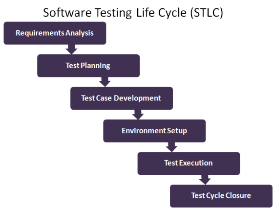

![Genislab]() Genislab Technologies
Genislab TechnologiesJust like developers follow the Software Development Life Cycle (SDLC) likewise testers also follow the Software Testing Life Cycle which is called as STLC. It is the sequence of activities carried out by the testing team from the beginning of the project till the end of the project. A good software tester is expected to have good knowledge of the STLC lifecycle and its activities.
Table Of Contents
STLC Life cycle
- There are 6 phases in the Software Testing Life Cycle or STLC life cycle
- STLC is a testing process which is executed in a sequence, in order to meet the quality goals
- It is not a single activity but it consists of many different activities which are executed to achieve a good quality product
- STLC is followed by the testing team
- STLC is similar to the SLDC, following a similar path and can run in parallel to the SDLC
STLC Phases
There are different phases in STLC which are given below. The testing activities start from the Requirements analysis phase and goes through all the phases one by one before completing with the Test cycle closure phase.
- There are 6 STLC Phases in the STLC Lifecycle
- The entry criteria must be fulfilled before each phase can start
- The exit criteria should be fulfilled before exiting a phase
- Every phase has one or more deliverables that are produced at the end of the phase
- The phases are executed in a sequence
The 6 STLC Phases are given below:
- Requirement analysis
- Test Planning
- Test case development
- Environment Setup
- Test Execution
- Test Cycle Closure
Each of the step mentioned above has some Entry Criteria (it is a minimum set of conditions that should be met before starting the software testing) as well as Exit Criteria (it is a minimum set of conditions that should be completed in order to stop the software testing) on the basis of which it can be decided whether we can move to the next phase of Testing Life cycle or not.
STLC Life Cycle Phase Details
Let us discuss about each phase of the STLC Life Cycle in detail. The STLC lifecycle can run in parallel or overlaps with the project life cycle.
Requirement Analysis
This is the very first phase of Software testing Life cycle (STLC). In this phase testing team goes through the Requirement document with both Functional and non-functional details in order to identify the testable requirements.
In case of any confusion the QA team may setup a meeting with the clients and the stakeholders (Technical Leads, Business Analyst, System Architects and Client etc.) in order to clarify their doubts.
Once the QA team is clear with the requirements they will document the acceptance Criteria and get it approved by the Customers.
Activities to be done in Requirement analysis phase are given below:
- Analyzing the System Requirement specifications from the testing point of view
- Preparation of RTM that is Requirement Traceability Matrix
- Identifying the testing techniques and testing types
- Prioritizing the feature which need focused testing
- Analyzing the Automation feasibility
- Identifying the details about the testing environment where actual testing will be done
Deliverables (Outcome) of Requirement analysis phase are:
- Requirement Traceability Matrix (RTM)
- Automation feasibility report
Test Planning
Test Planning phase starts soon after the completion of the Requirement Analysis phase. In this phase the QA manager or QA Lead will prepare the Test Plan and Test strategy documents. As per these documents they will also come up with the testing effort estimations.
Activities to be done in Test Planning phase are given below:
- Estimation of testing effort
- Selection of Testing Approach
- Preparation of Test Plan, Test strategy documents
- Resource planning and assigning roles and responsibility to them
- Selection of Testing tool
Deliverables (Outcome) of Test Planning phase are:
- Test Plan document
- Test Strategy document
- Best suited Testing Approach
- Number of Resources, skill required and their roles and responsibilities
- Testing tool to be used
Test Case Development
In this phase the QA team write test cases. They also write scripts for automation if required. Verification of both the test cases and test scripts are done by peers. Creation of Test Data is done in this phase.
Activities to be done in Test Case Development phase are given below:
- Creation of test cases
- Creation of test scripts if required
- Verification of test cases and automation scripts
- Creation of Test Data in testing environment
Deliverables (Outcome) of Test Case Development phase are:
- Test cases
- Test scripts (for automation if required)
- Test Data
Test Environment setup
This phase includes the setup or installation process of software and hardware which is required for testing the application. In this phase the integration of the third party application is also carried out if required in the project.
After setting up the required software and hardware the installation of build is tested. Once the installation of build is successful and complete then the Test Data is generated.
After the creation of Test data the Smoke testing is executed on the build in order to check whether the basic functionalities are working fine or not. This phase can be done in parallel with the Test Case Development phase.
Activities to be done in Test Environment Setup phase are given below:
- As per the Requirement and Architecture document the list of required software and hardware is prepared
- Setting up of test environment
- Creation of test data
- Installation of build and execution of Smoke testing on it
Deliverables (Outcome) of Test Environment Setup phase are:
- Test Environment setup is ready
- Test Data is created
- Results of Smoke testing
Test Execution
Before starting the Test Execution phase the Test Environment setup should be ready. In Test Execution phase the test cases are executed in the testing environment.
While execution of the test cases the QA team may find bugs which will be reported against that test case. This bug is fixed by the developer and is retested by the QA.
Activities to be done in Test Execution phase are given below:
- Execution of Test Cases
- Reporting test results
- Logging defects for the failed test cases
- Verification and retesting of the defect
- Closure of defects
Deliverables (Outcome) of Test Execution phase are:
- Test execution Report
- Updated test cases with results
- Bug Report
Test Cycle Closure
In order to start the Test Cycle Closure activity the Test Execution phase should be completed. In Test Cycle phase the QA team will meet and discuss about the testing artifacts.
The whole intent of this discussion is to learn lessons from the bad practices. This will help in future projects.
Activities to be done in Test Cycle Closure phase are given below:
- To evaluate the test completion on the basis of Test Coverage and Software Quality
- Documentation of the learning from the project
- Analyzing the test results to find out the distribution of severe defects
- Test Closure Report preparation
Deliverables (Outcome) of Test Cycle Closure phase are:
- Report of Test Closure
Entry & Exit Criteria For STLC Phases
The below table briefly explains the Software Testing Life Cycle STLC along with the Entry Criteria, Activity, Exit Criteria and Deliverable associated with each phase:
Requirement Analysis
| Entry Criteria | Activity | Exit Criteria |
| Availability of Requirement document both Functional as well as non-functional
Architectural document of the application or the product should be available Acceptance criteria defined and duly signed by the customers |
Analysis of System Requirement specifications to understand the different business modules and it’s functionalities
To identify the user profile, user interface and user authentication Types of tests to be performed on the application or product should be identified Should collect the details about testing priorities Preparation of RTM that is Requirement Traceability Matrix Test Environment details should be identified in order to do testing Analysis of automation possibility if it is required |
RTM should be signed off
The customer should sign off on the test automation feasibility |
| Deliverables (Outcome) – Requirement Traceability Matrix (RTM), Report on Automation Feasibility if it is applicable | ||
Test Planning
| Entry Criteria | Activity | Exit Criteria |
| Detailed requirement document
Requirement Traceability Matrix (RTM) Automation Feasibility Report |
Preparation of Test Plan document
Preparation of Test strategy document To analyze the best suited testing approach for the application or product To analyze the testing techniques and the types of testing to be carried out in order to maintain the quality Selection of the testing tool Estimation on the testing efforts Resource planning as per the skill required for testing and also assigning roles and responsibility to them |
Approved Test Plan document
Approved Test Strategy document Document of Effort estimation |
| Deliverables (Outcome) – Test Plan document, Test Strategy document, Effort estimation document | ||
Test case development
| Entry Criteria | Activity | Exit Criteria |
| Detailed Requirement document
Test Plan and Test strategy documents Automation Feasibility Report |
Creation of test cases for all the modules or features in the application or product
Creation of automation scripts if required Review of test cases and test automation scripts Test data creation |
Reviewed Test cases
Reviewed Test automation scripts Test data creation ready for testing |
| Deliverables (Outcome) – Test cases, Test automation scripts, Test data | ||
Test Environment Setup
| Entry Criteria | Activity | Exit Criteria |
| System design documents should be available
Architectural document of the application should be available Environment set-up plan document should be available |
Understanding the design and architecture of the application
Setting up the test environment Installation of required hardware and software in order to start testing the application Integration of any third party application (if required) Installation of build Creation of test data Execution of smoke testing on the build Accepting or rejecting the build as per the smoke test result |
Environment setup is ready for testing
All the required software and hardware are installed Build installation is complete and successful Test data creation is complete Smoke testing is done |
| Deliverables (Outcome) – Test environment along with test data, Smoke test result | ||
Test Execution
| Entry Criteria | Activity | Exit Criteria |
| Documents like RTM, Test Plan, Test strategy, Test cases and Test scripts should be ready
Test environment should be ready Test data should be ready Integration of third party application (if required) should be successful Smoke testing of the application should be successful |
Execution of test cases
Preparation of test result document Logging defects for the failed test cases Mapping of defects with the test cases To update the test cases and test strategy if required Fixed defects should be retested Closure of the defects if they are working as expected Execution of regression testing of the application or product in order to ensure its stability post defect closure |
All test cases are executed
Defects are logged and tracked for closure |
| Deliverables (Outcome) – Completed the test case execution, Updated the test cases wherever required, Defects reported | ||
Test Cycle Closure
| Entry Criteria | Activity | Exit Criteria |
| All the test cases are executed and updated
Test results are documented Defect logs are available |
Evaluation of the test completion on the basis of Test Coverage and Software Quality
Preparation of Test Closure report Analyzing the test results to find out the distribution of severe defects |
Signed off Test Closure report by the client |
| Deliverables (Outcome) – Test closure Report | ||
STLC and SDLC
Software Testing Life Cycle STLC is very similar to the the Software Development Life Cycle SDLC.
- STLC is a segment or a subset or a part of the SDLC
- SDLC is used to plan and execute the development of the software project while the scope of STLC is limited to testing activities
- In both STLC and SDLC, the activities are executed one after the other
- Both STLC and SDLC phases have entry and exit criteria to be fulfilled before entering or leaving a phase
Difference between – STLC vs SDLC
When comparing STLC vs SDLC there are some key differences that are observed.
| SDLC | STLC |
| Software Development Life Cycle – SDLC can be used for planning, implementation and release of the entire software development project | Software Testing Life Cycle governs only the testing and quality related activities of the project |
| SDLC is much larger than STLC | STLC is a part of SDLC |
| Development teams go through the requirements and analyze it to understand how to design, implement and architect it | QA teams analyze requirements from testing perspective to understand what needs to be tested, what kind of scenarios need to be tested, how the user will use the system and where they could face issues etc |
| Software development models and methodologies are decided in SDLC, project planning is done. Architecture and design are produced by the architect. | Model to be followed for testing is decided. Test plan and test strategy are finalized by the Test Manager and Test Lead. |
| Development teams work on the implementation and coding of the software | Testing team members work on developing test cases and test scripts |
| In development phase in SDLC, once development is completed on a feature, developers test the functionality they have developed, as part of unit testing | During test execution in STLC, testers test the entire application from end to end, testing all features and functionalities |
| Project closure activity has a wider scope since it looks at the over all project to evaluate the results of the project, getting project acceptance, documenting lessons learnt etc | Scope of the Test closure activities are limited to testing activities like evaluating test completion, preparing test closure report, analyzing test results, documenting / sharing lessons learnt etc. |
STLC Interview Questions
The following interview questions are typically asked in interviews with respect to STLC.
- How many phases are there in the STLC Life Cycle?
- Name all STLC phases in their sequence
- What is meant by entry criteria and exit criteria?
- What are the entry criteria for Requirements Analysis?
- What is the activities performed in Requirements Analysis Phase?
- What are the activities in Test Planning?
- What are the deliverables in Test Planning phase?
- What is done during test environment setup?
- In which phase do we produce test cases and test scripts?
- In which phase do we choose the test approach and strategy?
- In which phase is the testing tool selected?
- When do we do verification of test case and test script in the STLC?
- In which phase of STLC do we log the defects of the test case failure?
- When do we do retesting of defects in STLC?
- In which phase is the defect report created?
- What is the last phase of the STLC called?
- What are the differences between STLC and SDLC?
Other popular articles:
- What are the Software Development Life Cycle (SDLC) phases?
- What is fundamental test process in software testing?
- Estimating what testing will involve and what it will cost?
- What is Test Execution?
- What are the roles and responsibilities of a Tester?